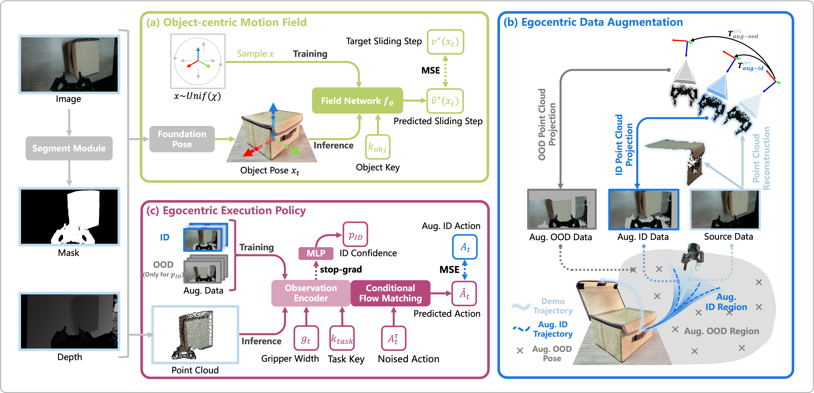
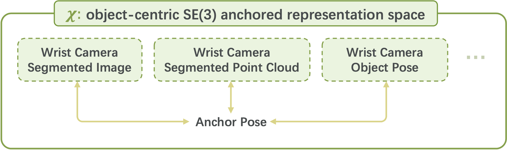
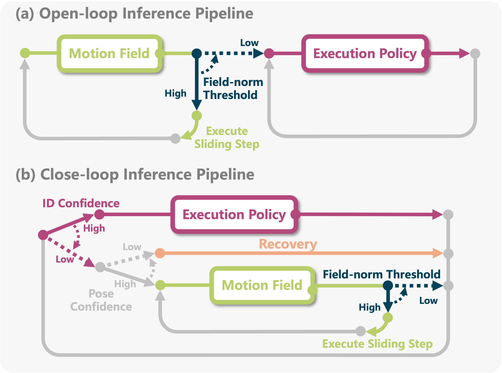

Online recovery
Continuously brings unseen or drifted states back toward demonstrated support instead of asking the policy to extrapolate.
Generalizing robotic manipulation across object poses, viewpoints, and dynamic disturbances is difficult—especially with only a few demonstrations. End-to-end visuomotor policies are expressive but data-hungry, while planning and optimization do not directly capture the interaction strategies demonstrated by humans.
We propose Sliding into Distribution (SID), a structured framework that learns an object-centric motion field from canonicalized demonstrations. The field iteratively slides the system toward the demonstrated manifold and into the reliable operating region of a lightweight egocentric execution policy. In the closed-loop variant, an auxiliary confidence signal monitors distribution drift online and routes the robot back to field-based realignment when needed.
Across six real-world tasks, SID achieves approximately 90% success under OOD initializations using only two demonstrations, while maintaining robustness to distractors and external disturbances.
Continuously brings unseen or drifted states back toward demonstrated support instead of asking the policy to extrapolate.
Reprojects point clouds and actions together, preserving their geometric and kinematic relationship.
Uses ID confidence to switch between execution, field-based realignment, and recovery as conditions change.
SID separates global alignment from local interaction, then reconnects them through confidence-aware online recovery.

A smooth descent field over canonicalized SE(3) approach states supplies large corrections far from the demonstrations and naturally vanishes near the demonstrated manifold.
OOD → ID alignment
Hand–eye-calibrated point-cloud reprojection perturbs viewpoints while updating relative actions consistently, creating valid ID training examples and explicit OOD negatives.
Geometric consistency
A lightweight flow-matching policy handles precise manipulation, while an auxiliary ID-confidence head detects drift and enables closed-loop realignment.
Closed-loop recovery

SID defines an object-centric representation space anchored by a target pose in SE(3). Segmented images, point clouds, and explicit object poses can therefore be compared through the same pose-aligned geometry.
In our implementation, the target-object pose is estimated in the wrist-camera frame. Canonicalizing demonstrations around this anchor suppresses scene- and camera-specific variation, giving the motion field a consistent space in which to learn corrective steps.
SID-open performs a single field-to-policy handoff. SID-closed instead keeps monitoring the policy’s operating region and can route control back to realignment or recovery throughout execution.

All success rates are measured over 50 real-world trials per task. SID uses 2 raw demonstrations; trainable baselines use 100.
average OOD success for SID-closed across six tasks
+25.7 points over MT3 on average| Task | Best baseline | SID-open | SID-closed |
|---|---|---|---|
| Open Drawer | 76 | 90 | 92 |
| Pour Water | 78 | 86 | 90 |
| Hang Tape | 46 | 82 | 88 |
| Hang Cup | 74 | 86 | 90 |
| PnP-Box | 58 | 84 | 92 |
| Multi-PnP-Box | 52 | 82 | 86 |
Success rate (%). “Best baseline” is the strongest non-SID result for each task.
SID recovers from varied object poses and wrist-camera viewpoints before executing each task.
Target-centric perception filters clutter, while closed-loop confidence detects execution drift and triggers realignment.
50 trials / task
| Task | Best baseline | SID-O | SID-C |
|---|---|---|---|
| Hang Tape | 80 | 44 | 84 |
| Hang Cup | 68 | 36 | 88 |
| PnP-Box | 74 | 52 | 86 |
| Pour Water | 78 | 40 | 82 |
85.0% average success for SID-closed, compared with 75.0% for the strongest baseline.
50 trials / task
| Task | Best baseline | SID-O | SID-C |
|---|---|---|---|
| Hang Cup | 72 | 86 | 88 |
| PnP-Box | 74 | 84 | 90 |
89.0% average success for SID-closed, with less than a 10% drop from the corresponding static OOD setting.
Success rate (%). “Best baseline” reports the strongest non-SID method for each task. SID-O and SID-C denote SID-open and SID-closed.
Lightweight SID skills can be loaded together and invoked stage by stage—without retraining an end-to-end policy.
SID treats distribution shift as a control signal: detect it, realign online, and resume execution inside the policy’s reliable region.
The experiments suggest that few-demonstration robustness comes not only from a stronger execution policy, but from actively recovering its operating distribution. Closed-loop confidence-aware routing is especially important under disturbances, where the robot may need to realign more than once.
Scope and outlook. The current system still assumes reliable object-centric perception and a visible, reachable approach region. Future work can make recovery more object-agnostic and obstacle-aware.
If you find this work useful, please consider citing our paper.
@misc{ma2026sidslidingdistributionrobust,
title = {SID: Sliding into Distribution for Robust
Few-Demonstration Manipulation},
author = {Yicheng Ma and Wei Yu and Zhian Su and
Xidan Zhang and Huixu Dong},
year = {2026},
eprint = {2605.13428},
archivePrefix = {arXiv},
primaryClass = {cs.RO},
url = {https://arxiv.org/abs/2605.13428}
}